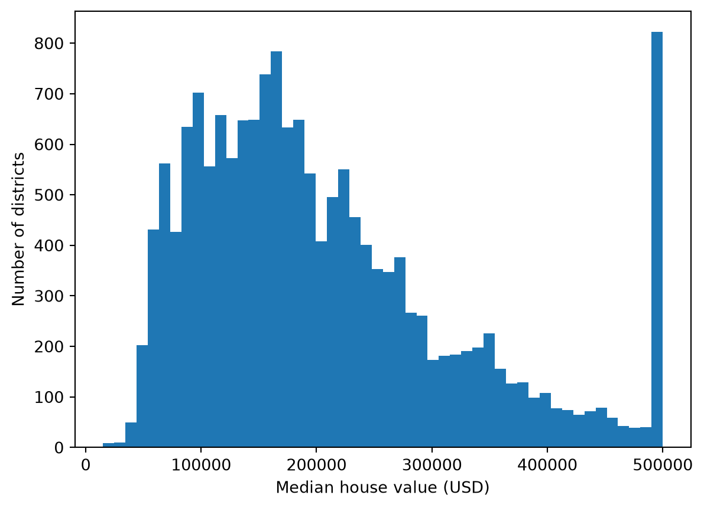
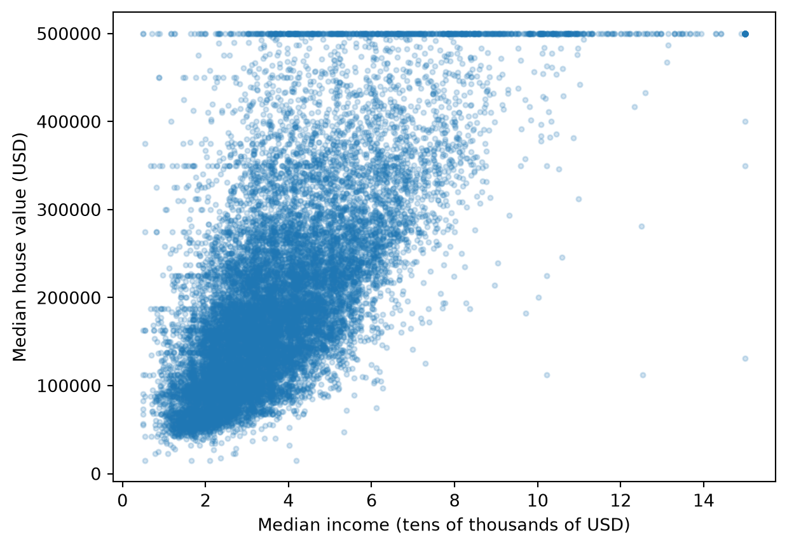
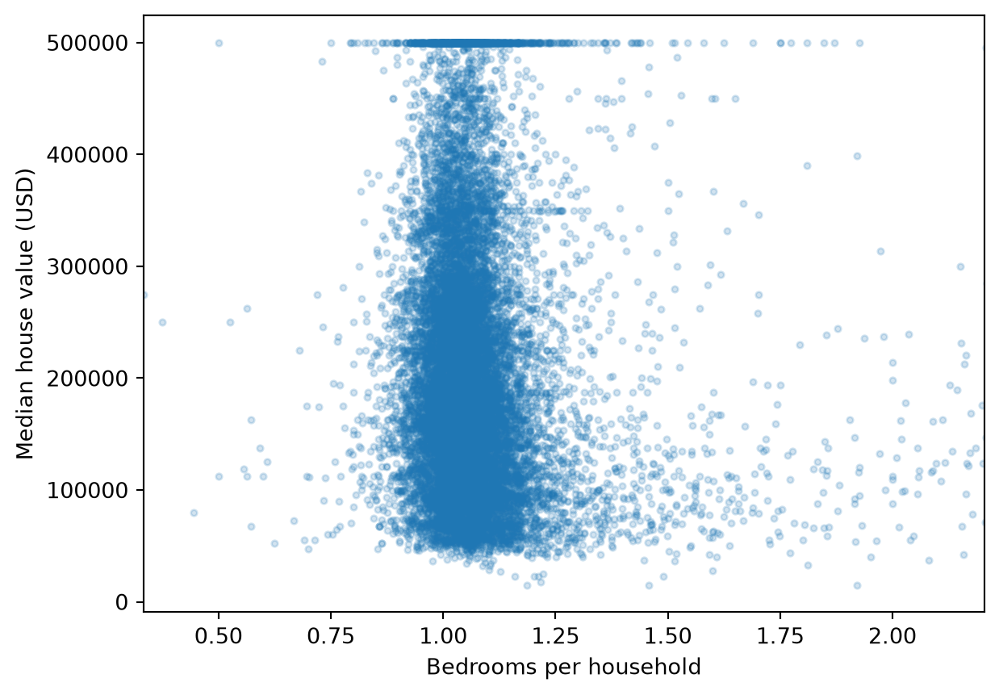
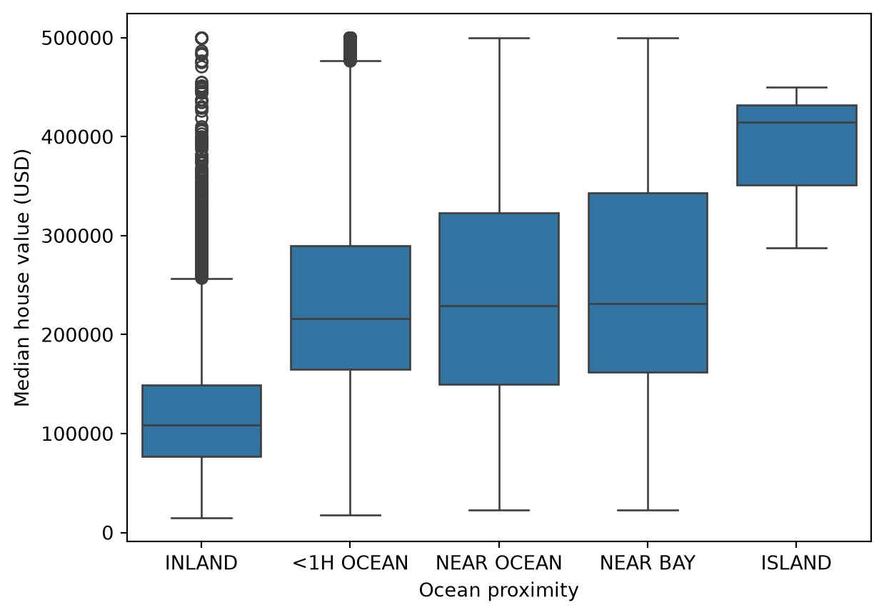
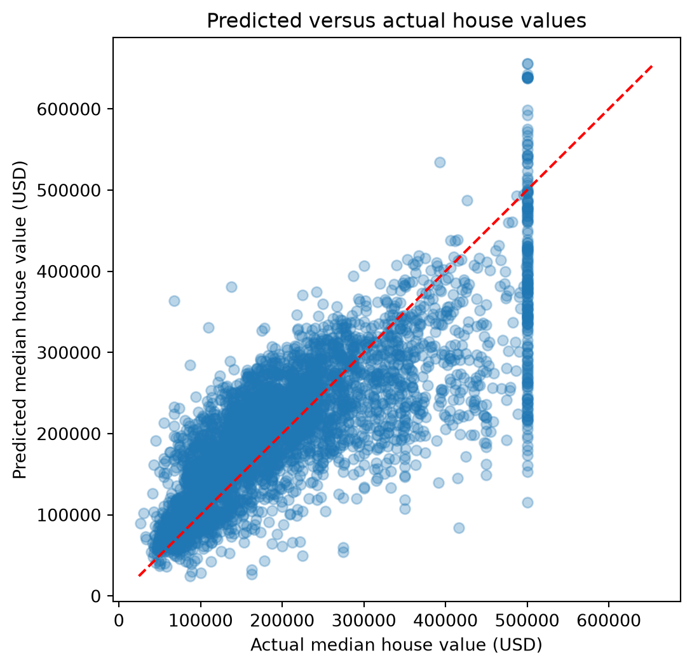

This project investigates whether a small set of demographic and geographic variables can be used to predict median house values across California districts. Using 20,640 observations from the California Housing dataset, we modelled median_house_value from median_income, bedrooms_per_household, and ocean_proximity to explore relationships between these variables, to better understand which factors are associated with housing prices. Numeric missing values and categorical predictors were handled within a training-only preprocessing pipeline to avoid information leakage. We compared a mean baseline, linear regression, and Ridge regression using five-fold cross-validation, selecting Ridge as the best-performing model. It achieved a cross-validation RMSE of approximately $74,305 and a test RMSE of approximately $72,883, indicating similar performance on unseen districts. Although predictions generally tracked actual values, errors remained substantial for some high-priced districts. The dataset’s upper-value cap near $500,000 further limits the model’s ability to represent the full range of housing prices.
Introduction
Housing prices are an important economic issue globally, and especially in California where housing costs can range drastically depending on location and other factors. Understanding what influences house prices can help buyers, sellers, and policymakers make more informed decisions. Factors such as household income, housing characteristics, and location may all play a role in determining property values. Previous research has found that household income, and geographic location amongst other things are important factors associated with housing values (Landvoigt et al., 2015). For example, Conroy and Milosch (2011) found that proximity to the coast is associated with higher residential property prices in San Diego County, California.
In this project, our aim is to investigate how median household income, bedrooms per household (found through data processing), and ocean proximity are related to housing prices in California. Our research question is: Given these three variables, how well can we predict median house values across California regions?
We use the California Housing dataset, published on Kaggle by Cam Nugent and based on data from the 1990 California census. Each row represents a census block group and includes information about housing and demographic characteristics. Our target variable is median_house_value, which represents the median house value for each area. The three explanatory variables used in our analysis are median_income, total_bedrooms (which we divide by households to achieve an estimate of bedrooms_per_household), and ocean_proximity. The dataset was originally featured in Aurélien Géron’s Hands-On Machine Learning with Scikit-Learn and TensorFlow and is downloaded directly from the author’s GitHub repository for reproducibility.
Methods
Data Source
As aforementioned, the California Housing dataset was originally obtained from Kaggle, uploaded by Cam Nugent under the title California Housing Prices. The dataset contains information from the 1990 California census and includes 20,640 observations and 10 variables - 5 of which we retain in order to answer our research question.
According to the Kaggle dataset description, the data was in Aurélien Géron’s book Hands-On Machine Learning with Scikit-Learn and TensorFlow. Géron’s version is a modified version of the original California Housing dataset.
For reproducibility, the dataset is downloaded programmatically from Géron’s Hands-On Machine Learning GitHub repository and saved to data/raw/housing.csv when the analysis is rendered.
We imported pandas for data manipulation and NumPy for numerical operations, then downloaded the raw dataset from Géron’s GitHub repository and loaded it into Python.
These functions allowed us to examine the first rows of the dataset, its dimensions, the data types, and the summary statistics to understand the dataset before cleaning it.
This function allowed us to identify the missing observations. Thanks to this function, we found 207 missing values in total_bedrooms. However, we retain the missing values in order to not leak data in the preprocessing stages.
4. Check duplicate observations
Code
housing.duplicated().sum()
np.int64(0)
To ensure there were no duplicate values or repeated observations that might affect our analysis, we ran the above function and no duplicates were found.
A final check to confirm that the only missing values are the 207 in total_bedrooms, that no duplicate rows remain, and that the dataset dimensions are as expected.
We then saved the cleaned dataset in the processed data folder so it can be reused for exploratory data analysis and modelling without modifying the original raw data. The 207 missing total_bedrooms values are intentionally retained for imputation after the train/test split.
Because total_bedrooms counts all bedrooms in a district, it mostly reflects district size rather than the size of typical homes. We divided it by the number of households to create bedrooms_per_household, then dropped the two original columns. This is calculated within each row, so it uses no information from other districts and can safely be done before the split. Districts with a missing total_bedrooms value also have a missing bedrooms_per_household; these are imputed later in the modelling pipeline using the training data only.
We split the data into a training set (80%) and a test set (20%) before doing any exploratory analysis or modelling, so that the test set does not influence any of our decisions. We set a random seed so that the split is the same every time the analysis is run.
Exploratory Data Analysis
We explored only the training data, so that the test set does not influence any of our decisions.
Code
import matplotlib.pyplot as pltimport seaborn as snshousing_train = pd.read_csv("../data/processed/housing_train.csv")housing_train.describe().round(2)
median_house_value
median_income
bedrooms_per_household
count
16512.00
16512.00
16352.00
mean
206953.87
3.87
1.10
std
115442.74
1.89
0.50
min
14999.00
0.50
0.33
25%
119800.00
2.57
1.01
50%
179750.00
3.54
1.05
75%
265000.00
4.75
1.10
max
500001.00
15.00
34.07
Code
housing_train["ocean_proximity"].value_counts()
ocean_proximity
<1H OCEAN 7331
INLAND 5249
NEAR OCEAN 2129
NEAR BAY 1800
ISLAND 3
Name: count, dtype: int64
The table above summarizes the numeric variables in the training set, and the counts show how many districts fall into each ocean proximity category.
Code
fig, ax = plt.subplots(figsize=(7, 5))ax.hist(housing_train["median_house_value"], bins=50)ax.set_xlabel("Median house value (USD)")ax.set_ylabel("Number of districts")plt.show()

Figure 1: Distribution of median house value in the training set.
Figure 1 shows that median house value is right-skewed, with a noticeable spike at the highest value, around $500,000.
Code
fig, ax = plt.subplots(figsize=(7, 5))ax.scatter(housing_train["median_income"], housing_train["median_house_value"], alpha=0.2, s=8)ax.set_xlabel("Median income (tens of thousands of USD)")ax.set_ylabel("Median house value (USD)")plt.show()

Figure 2: Median house value against median income for districts in the training set.
Figure 2 shows a positive relationship between median income and median house value: districts with higher incomes tend to have more expensive homes. The horizontal line of points at about $500,000 reflects a cap in the dataset: all districts with higher values are recorded at this maximum, so our model cannot learn to predict values above it.
Code
upper = housing_train["bedrooms_per_household"].quantile(0.99)fig, ax = plt.subplots(figsize=(7, 5))ax.scatter(housing_train["bedrooms_per_household"], housing_train["median_house_value"], alpha=0.2, s=8)ax.set_xlim(housing_train["bedrooms_per_household"].min(), upper)ax.set_xlabel("Bedrooms per household")ax.set_ylabel("Median house value (USD)")plt.show()

Figure 3: Median house value against bedrooms per household for districts in the training set (x-axis limited to the 99th percentile).
Figure 3 shows that most districts have about one bedroom per household (roughly 0.9 to 1.2). Within this range there is no clear trend in median house value, although districts with more than about 1.25 bedrooms per household tend to have lower values, mostly below $200,000. A small number of districts have extreme values (up to about 34), so the x-axis is limited to the 99th percentile (about 2.2) for readability.
Code
order = housing_train.groupby("ocean_proximity")["median_house_value"].median().sort_values().indexfig, ax = plt.subplots(figsize=(7, 5))sns.boxplot(data=housing_train, x="ocean_proximity", y="median_house_value", order=order, ax=ax)ax.set_xlabel("Ocean proximity")ax.set_ylabel("Median house value (USD)")plt.show()

Figure 4: Distribution of median house value by ocean proximity in the training set.
Figure 4 shows that inland districts have much lower median house values than districts near the coast, while the three coastal categories are broadly similar. The island category appears highest, but it contains very few districts, so this comparison is unreliable.
Takeaway: Overall, median income and ocean proximity appear to be the most useful predictors of median house value, while bedrooms per household shows only a weak relationship. The cap on house values at about $500,000 is a limitation we will keep in mind when evaluating our model.
Model Development
Preprocessing and baseline
Code
from sklearn.compose import ColumnTransformerfrom sklearn.dummy import DummyRegressorfrom sklearn.impute import SimpleImputerfrom sklearn.pipeline import Pipelinefrom sklearn.preprocessing import OneHotEncoder, StandardScaler# Load the training data only.housing_train = pd.read_csv("../data/processed/housing_train.csv")target ="median_house_value"numeric_features = ["median_income","bedrooms_per_household",]categorical_features = ["ocean_proximity",]predictor_features = numeric_features + categorical_featuresX_train = housing_train[predictor_features]y_train = housing_train[target]numeric_preprocessor = Pipeline( steps=[ ("imputer", SimpleImputer(strategy="median")), ("scaler", StandardScaler()), ])categorical_preprocessor = Pipeline( steps=[ ("encoder", OneHotEncoder(handle_unknown="ignore")), ])preprocessor = ColumnTransformer( transformers=[ ("numeric", numeric_preprocessor, numeric_features), ("categorical", categorical_preprocessor, categorical_features), ])dummy_pipeline = Pipeline( steps=[ ("preprocessor", preprocessor), ("model", DummyRegressor(strategy="mean")), ])dummy_pipeline.fit(X_train, y_train)# Confirm that the fitted baseline can make predictions.dummy_predictions = dummy_pipeline.predict(X_train)print("Training rows:", X_train.shape[0])print("Training predictors:", X_train.shape[1])print("First five baseline predictions:", dummy_predictions[:5])
Training rows: 16512
Training predictors: 3
First five baseline predictions: [206953.86779312 206953.86779312 206953.86779312 206953.86779312
206953.86779312]
We predicted median_house_value using median_income, bedrooms_per_household, and ocean_proximity. The numeric variables were processed with median imputation for missing values and standardization. The categorical ocean_proximity variable was converted into one-hot encoded indicators using scikit-learn’s ColumnTransformer. All pre-processing steps were placed inside a pipeline so that they were fitted using training data only and were repeated separately within each cross-validation fold. We also fitted a mean DummyRegressor as a baseline for comparing model performance.
We compared a mean DummyRegressor with linear regression using five-fold cross-validation on the training data, following scikit-learn’s cross-validation procedure. In each fold, the model was trained on four parts of the training data and evaluated on the remaining part. We also tuned a Ridge regression model using three regularization strengths (alpha = 0.1, 1.0, and 10.0) through scikit-learn’s Ridge implementation. We used root mean squared error (RMSE) as the evaluation metric because it summarizes prediction error in the same units as house value and gives greater weight to larger errors. Lower RMSE values indicate better performance. We selected the model with the lowest mean cross-validation RMSE, keeping the test set completely separate until final evaluation.
Model Evaluation
Code
from sklearn.metrics import mean_squared_errorhousing_test = pd.read_csv("../data/processed/housing_test.csv")X_test = housing_test[predictor_features]y_test = housing_test[target]# Refit the selected pipeline using all training data.best_pipeline.fit(X_train, y_train)test_predictions = best_pipeline.predict(X_test)test_rmse = mean_squared_error(y_test, test_predictions) **0.5print("Selected model:", best_model_name)print("Test RMSE:", test_rmse)
Selected model: Ridge
Test RMSE: 72883.45009881035
After completing model selection using only the training data, we refitted the selected pipeline on the full training set and evaluated it once on the held-out test set. We measured performance using root mean squared error (RMSE), which expresses prediction error in dollars and gives greater weight to larger errors; lower values indicate better predictive performance. We also created a predicted-versus-actual plot, using the diagonal reference line to assess how closely the model’s predictions matched the observed house values.
Predicted-versus-actual plot
Code
plt.figure(figsize=(6, 6))plt.scatter(y_test, test_predictions, alpha=0.3)plot_min =min(y_test.min(), test_predictions.min())plot_max =max(y_test.max(), test_predictions.max())plt.plot( [plot_min, plot_max], [plot_min, plot_max], linestyle="--", color="red",)plt.xlabel("Actual median house value (USD)")plt.ylabel("Predicted median house value (USD)")plt.title("Predicted versus actual house values")plt.show()

Figure 5: Predicted versus actual median house values for the test set, with the diagonal line showing perfect predictions.
Results
The selected Ridge model achieved a test RMSE of approximately $72,883 on the held-out test data. The test RMSE was similar to the cross-validation RMSE of approximately $74,305, suggesting that the model performed similarly on unseen data. Predictions generally increased with actual house values, as shown by the upward pattern around the diagonal reference line. However, the substantial spread around the line indicates prediction errors, especially for higher-priced districts. The vertical band near $500,000 reflects the dataset’s house-value cap.
Discussion
Our Ridge regression model predicted median house values with a test RMSE of approximately $72,883, similar to its cross-validation RMSE of $74,305. This is a substantial improvement over the mean baseline (cross-validation RMSE of approximately $115,439), reducing prediction error by about 36%. This suggests that median income, bedrooms per household and ocean proximity together capture a meaningful part of the variation in housing prices across California districts. Ridge and linear regression performed almost identically, which is expected given that our model uses only three predictors, leaving little room for regularization to improve performance.
These results are consistent with our exploratory analysis. Median income showed the clearest positive relationship with house value, inland districts had noticeably lower values than coastal ones, and bedrooms per household showed only a weak relationship. However, an RMSE of about $73,000 is still large compared to the average house value in the training data (about $207,000), so the model is better suited to identifying broad trends than to precise predictions for individual districts.
Our analysis has several limitations. House values in the dataset are capped at about $500,000, so the most expensive districts are recorded at this maximum. As the predicted-versus-actual plot shows, this leads the model to underpredict many high-value districts while sometimes predicting values above the cap. The data are also from the 1990 census and may not reflect current housing markets, and the island category contains very few districts, so its estimates are unreliable. Finally, we only considered linear models with three predictors.
Future work could include additional predictors such as housing age, population density or geographic coordinates, explore non-linear models such as random forests or gradient boosting, and handle the capped values, for example by excluding or separately modelling districts at the cap.
Conroy, S. J., & Milosch, J. L. (2011). An estimation of the coastal premium for residential housing prices in San Diego County. Real Estate Finance and Economics, 42, 211–228. https://doi.org/10.1007/s11146-009-9195-x